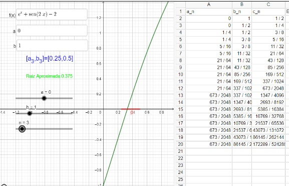

Métodos Numéricos
El método de la bisección es un algoritmo numérico utilizado para encontrar aproximaciones a las raíces de una ecuación o función, es decir, los valores de x para los cuales f(x)=0. Este método es especialmente útil cuando se trabaja con ecuaciones no lineales y es relativamente simple de implementar. Aquí tienes una descripción básica del método de la bisección
Intervalo inicial: Debes tener un intervalo inicial [a,b] en el cual se sepa que la función cambia de signo (es decir, f(a)⋅f(b) < 0)Esta condición es esencial para garantizar que haya al menos una raíz dentro del intervalo. Continuidad de la función: La función f(x) debe ser continua en el intervalo [a,b].
1.Calcula el punto medio del intervalo inicial: c= a+b / 2
2.Evalúa la función f(c) en el punto medio. Determina si f(c) es igual a cero (en cuyo caso, c es una raíz exacta) o si f(c) tiene el mismo signo que f(a) o f(b).
3.Determina si f(c) es igual a cero (en cuyo caso, c es una raíz exacta) o si f(c) tiene el mismo signo que f(a) o f(b). Si f(c) es igual a cero, entonces has encontrado una raíz exacta y puedes detener el proceso. Si f(c) tiene el mismo signo que f(a), la raíz se encuentra en el intervalo [c,b], por lo que debes reemplazar a por c (es decir,a=c). Si f(c) tiene el mismo signo que f(b), la raíz se encuentra en el intervalo [a,c], por lo que debes reemplazar b por c (es decir, b=c).
4.Repite los pasos 1-3 hasta que el intervalo se vuelva lo suficientemente pequeño o hasta que encuentres una aproximación aceptable de la raíz.
5.La aproximación final de la raíz se encuentra en el punto medio del intervalo final, es decir,aprox aprox= a+b/2.
"El método de la bisección es un proceso iterativo que divide continuamente el intervalo a la mitad y reduce la incertidumbre sobre la ubicación de la raíz. Aunque puede ser más lento que algunos otros métodos numéricos, es robusto y garantiza la convergencia a una raíz en función de las condiciones iniciales proporcionadas"
from math import *
# Definición de la función f(x)
def f(x):
return e**x + sin(2*x) - 2
# Implementación del Método de Bisección
def MetodoBiseccion(a, b, tol):
m1 = a
m = b
k = 0
# Verificar si el producto de f(a) y f(b) es mayor que cero (no hay cambio de signo)
if f(a) * f(b) > 0:
print('No se encuentra una raíz en el intervalo')
while abs(((m1 - m) / m) * 100) > tol:
m1 = m
m = (a + b) / 2
# Actualizar a y b basado en el cambio de signo
if f(a) * f(m) < 0:
b = m
if f(m) * f(b) < 0:
a = m
# Imprimir el intervalo actual
print('El intervalo es [', a, ',', b, ']')
k = k + 1
# Imprimir la aproximación de la raíz y el número de iteraciones
print('X', k, '=', m, ' es una aproximación')
# Llamada a la función MetodoBiseccion con valores iniciales
MetodoBiseccion(0, 1, 10**(-10))
El intervalo es [ 0 , 0.5 ] El intervalo es [ 0.25 , 0.5 ] El intervalo es [ 0.25 , 0.375 ] El intervalo es [ 0.3125 , 0.375 ] El intervalo es [ 0.3125 , 0.34375 ] El intervalo es [ 0.328125 , 0.34375 ] El intervalo es [ 0.328125 , 0.3359375 ] El intervalo es [ 0.328125 , 0.33203125 ] El intervalo es [ 0.328125 , 0.330078125 ] El intervalo es [ 0.328125 , 0.3291015625 ] El intervalo es [ 0.32861328125 , 0.3291015625 ] El intervalo es [ 0.32861328125 , 0.328857421875 ] El intervalo es [ 0.32861328125 , 0.3287353515625 ] El intervalo es [ 0.32861328125 , 0.32867431640625 ] El intervalo es [ 0.32861328125 , 0.328643798828125 ] El intervalo es [ 0.32861328125 , 0.3286285400390625 ] El intervalo es [ 0.32862091064453125 , 0.3286285400390625 ]Graficación
